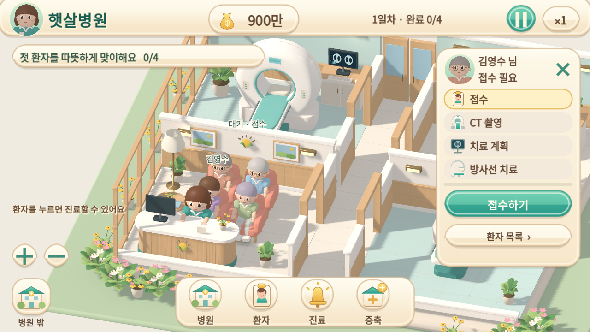
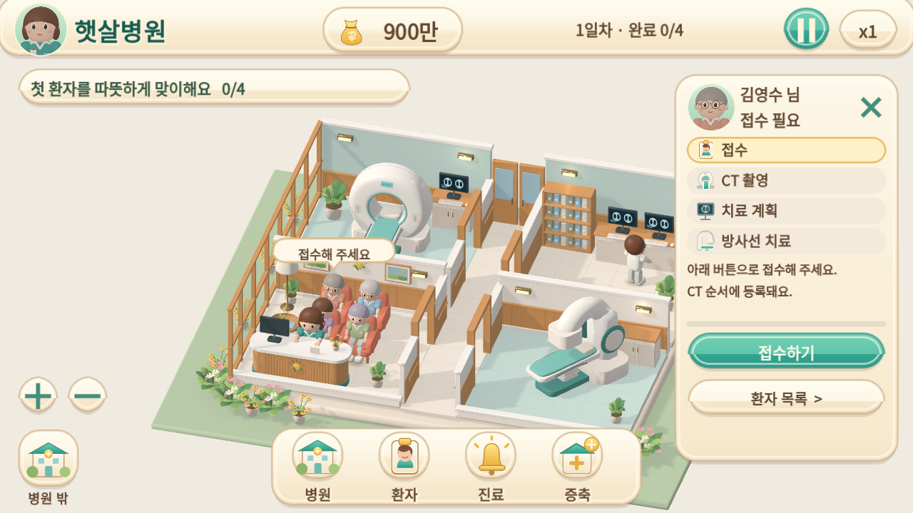
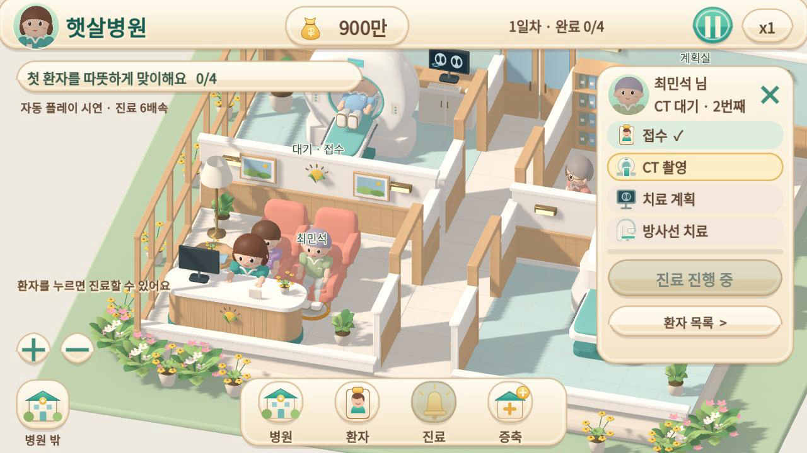
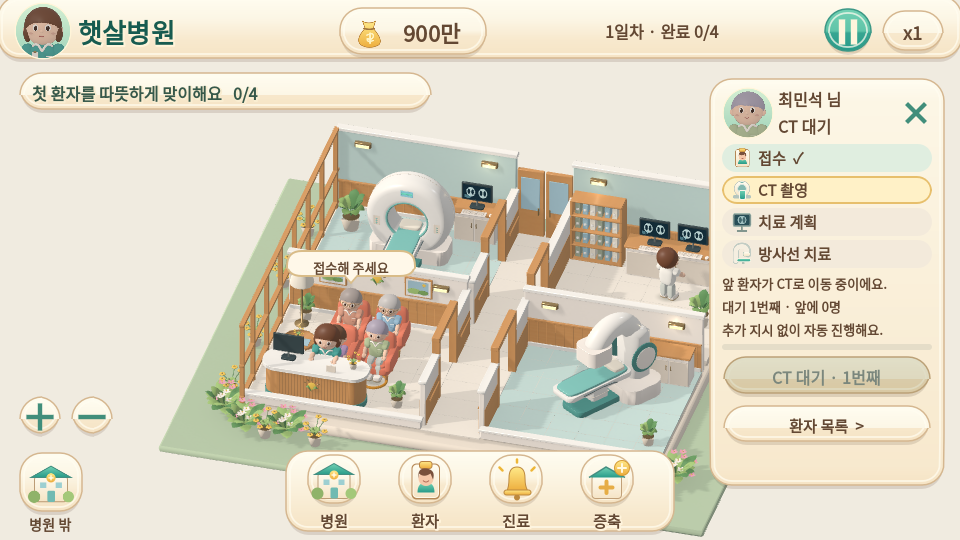
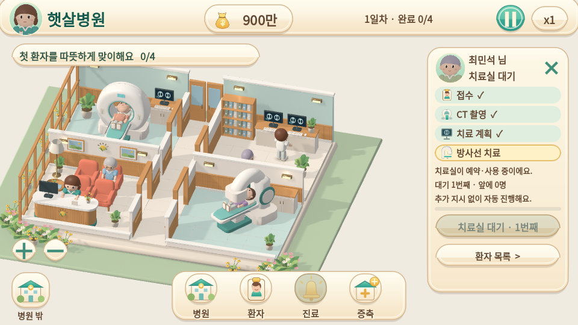
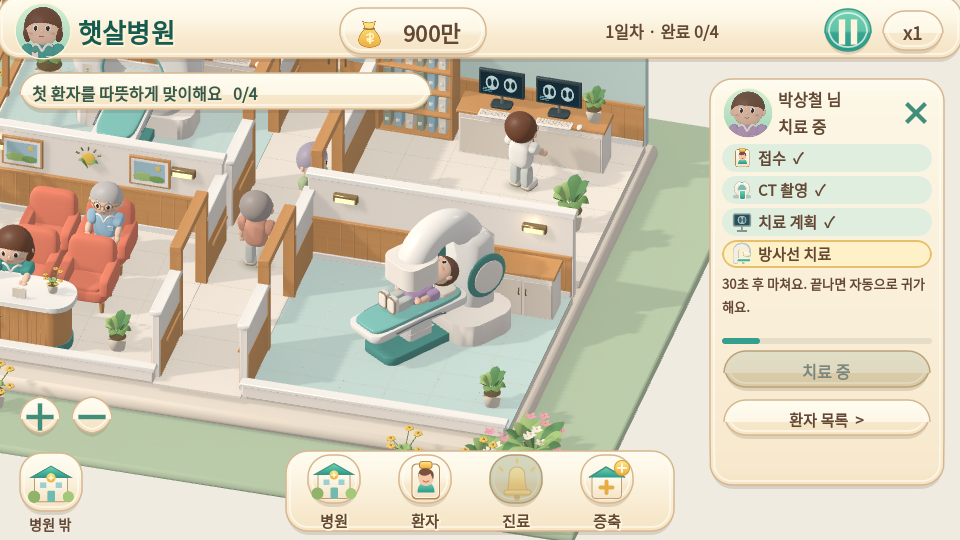
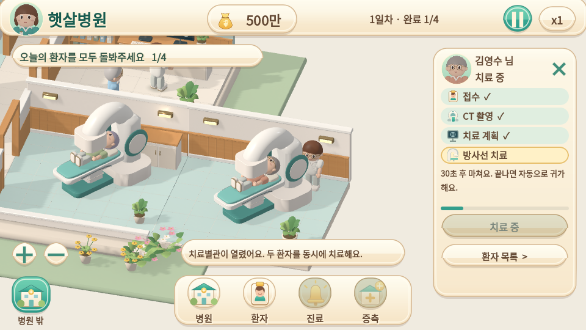
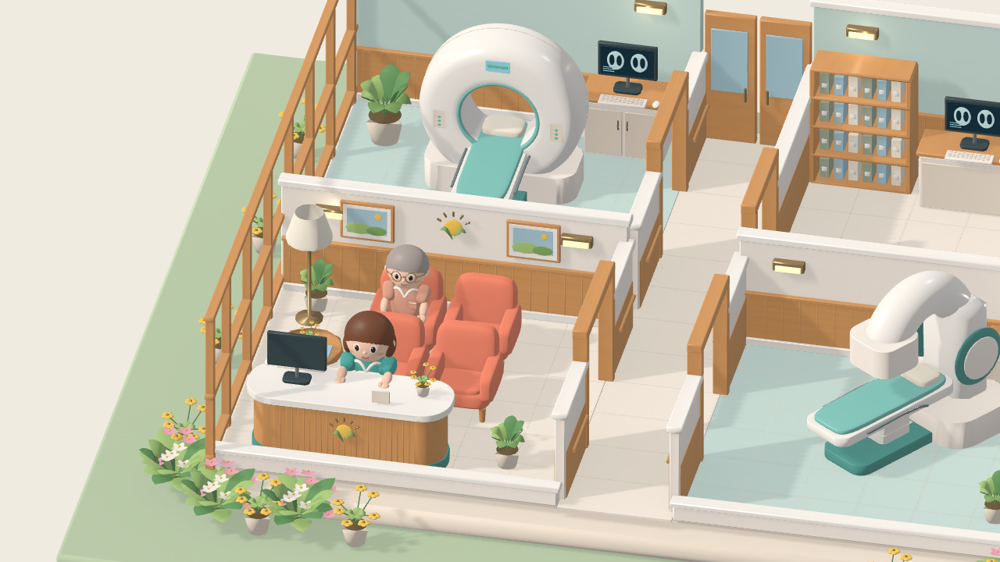
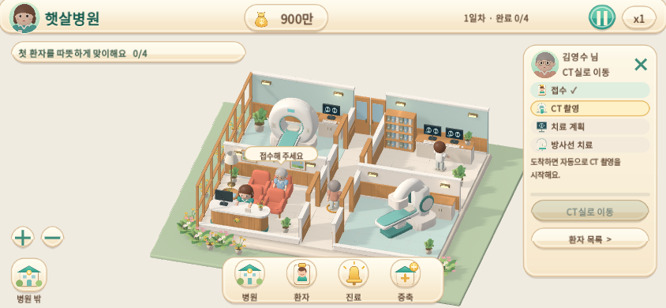

햇살병원 · 화면 구도와 피드백
이 페이지는 5e60676 버전의 기록입니다. 최신 기본 카메라 비교와 1배속 영상을 함께 확인하세요.
기존 운영 기능을 유지하며 환자·장비를 읽기 쉬운 구도, 상황에 맞는 안내, 치료 자세와 재질 반응을 다듬었습니다. 모든 화면과 영상은 실제 Godot 실행 결과입니다.
정상 1배속 · 환자 선택과 업무 지시
54초 · 자동 입력 시연입니다. 게임은 정상 1배속으로 진행합니다. 화면의 포인터가 실제 캔버스 클릭으로 환자를 선택하고 접수·계획을 지시합니다. 게임 시간을 건너뛰거나 빠르게 재생한 영상이 아닙니다. 실제 Mac/iPhone 사용자의 수동 플레이테스트와는 구분합니다.
카드가 열려도 환자와 CT가 보이는 구도

변경 전 · 3119d2f
변경 후 · UI를 제외한 영역에 구도 배치상태와 열린 UI에 따라 구도가 달라집니다. 직접 드래그·줌하면 수동 구도를 유지하며, 환자 재선택이나 병원 전체 보기로 자동 구도로 돌아옵니다.
대기에는 대기 이유와 차례를 안내

이전 영상 8초 · CT 대기에도 ‘진료 진행 중’
변경 후 · 기다리는 대상·차례·자동 진행 여부별도 시연의 화면이므로 대기 순번 자체는 다를 수 있습니다. 고정 방 이름과 조작 설명 대신 필요한 환자의 짧은 말풍선, 선택 카드의 상세 이유를 사용합니다.
치료 대기 장소와 사용 중인 장비를 함께 확인

치료 대기 중에도 대기 환자와 장비가 하단 메뉴에 가려지지 않도록 구도를 조정합니다. 카드 제목은 짧게 유지하고 차례와 자동 진행 여부는 본문과 버튼에 표시합니다.
몸과 장비가 구분되는 치료 자세

본원 · 얼굴과 몸이 보이는 방향
별관 · 같은 메시·자세 기준Blender의 장비·침대와 게임의 환자 자세를 함께 -35° 돌렸습니다. 실제 메시의 지지 높이·헤드 아래 간격과 카메라에서 얼굴까지의 가림을 검사했습니다.
같은 카메라 · 재질과 조명 비교


변경 전변경 후노출·전체 채도는 유지하고 목재·직물·코팅 외장을 각각 조정했습니다. 중립 환경광, 주광과 보조광의 비율, 그림자 불투명도·필터를 분리해 다뤘습니다.
전체 운영 확인 · 자동 6배속
접수·CT·계획·치료·증축·동시 치료·다음 날을 확인하는 자동 입력 시연입니다. 인코딩 프레임 수는 모바일 실행 성능을 뜻하지 않습니다.
브라우저 · 가로 터치 입력 확인

데스크톱 클릭과 844×390 터치 에뮬레이션에서 환자 선택·접수와 IndexedDB 저장을 확인했습니다. 실제 Mac/iPhone Safari의 성능과 터치 가독성은 별도로 확인해야 합니다.
변경 내용과 남은 한계 · 검증 기록 · 이번 실행 결과 · Blender 원본